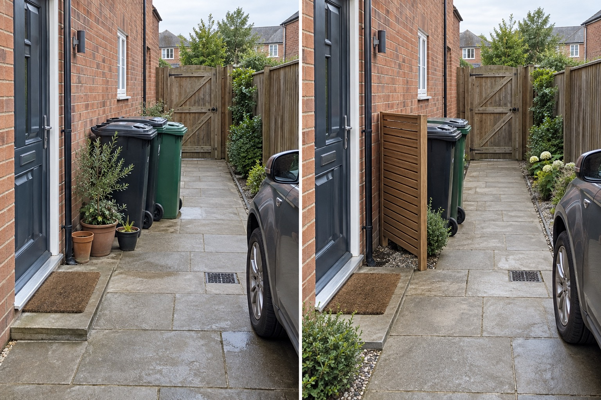

Keep handles reachable
Orient the containers so everyday opening and collection movement remain simple.
A bin screen works only if every container can still be opened, cleaned and rolled out without blocking the entrance. Start with the full collection-day movement, then place one visual layer outside that route.
Editorially reviewed September 10, 2026.
This AI-generated comparison is visual inspiration only. It does not verify dimensions, safety, local rules, products, plants, costs, construction or professional conclusions.

Orient the containers so everyday opening and collection movement remain simple.
Use the existing hard surface from storage to the agreed presentation point.
Reduce the entrance view without building a tight roofed box around the bins.
Islington Council wheelie-bin guidance requires suitable private hardstanding and clear collection access in its area. Brighton & Hove storage guidance prioritizes private storage that does not obstruct pavement or street access. These sources frame the decision; they do not certify this pictured layout.
The two bins, entrance, step, paved route, driveway, vehicle edge, gate, drain, walls, levels and camera stay unchanged. The concept does not claim that this screen meets local fire, waste or planning rules.
Roll every full-size bin from storage to the local presentation point and back.
Leave room to open lids, grip handles and clean the area without moving fixed planting.
Test the route with the door, gate and parked vehicle in normal positions.
Ask the collection authority about storage, presentation, assisted collection and enclosure requirements.
Avoid a screen that traps a bin, blocks the entrance, forces wheels over planting, hides the drain, requires lifting, locks collection crews out or assumes another council’s dimensions apply.
Stop before constructing an enclosure, altering paving or drainage, narrowing an access route or fixing anything near services. Confirm waste, fire, planning and access requirements locally.
First preserve opening, cleaning and collection movement. Then test a side screen or planting outside the rolling route.
Rules and practical requirements vary. Do not infer ventilation, fire or planning suitability from a visual concept.
Use a location permitted by the local collection authority with workable private access and no obstruction to the entrance or public route.
No. Measure the actual bins, doors, turns, slopes and collection path and verify local requirements.
Upload a level, wide photo that keeps access, drains, boundaries, services and mature features visible.
AI concepts require independent verification of site conditions, safety, local rules and professional requirements before physical work.